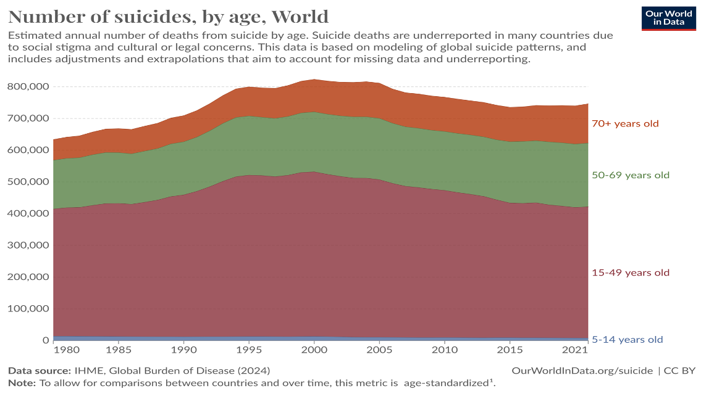
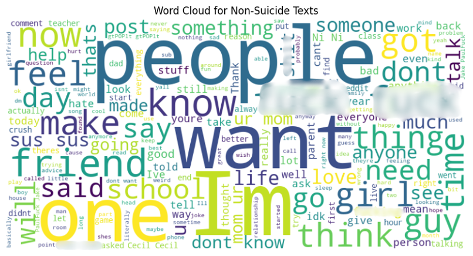
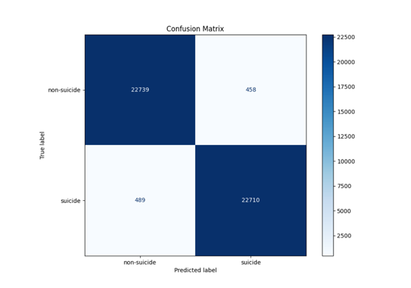

🧠 Project Motivation
The idea behind this project stemmed from a deeply personal moment. A close friend of mine, who is a psychologist, once shared a tragic story about a 13-year-old child who had taken their own life. Hearing this affected me profoundly. It made me realise that suicide is not just something that affects adults — children, too, can suffer in silence, as global suicide statistics sadly confirm.
With a background in psychology, I’ve always been interested in the intersection of mental health and technology. This project gave me the opportunity to combine my technical skills with something that genuinely matters to me — using artificial intelligence as a supportive tool in the fight against suicide.
I didn’t want this model to be just lines of code. I wanted it to reflect the urgency and emotional weight of the issue.
Detecting Suicide Ideation on Social Media With DistilBERT
This project involved developing an AI model using the DistilBERT transformer to detect suicidal ideation in Reddit posts. Using a dataset from the SuicideWatch and Depression subreddits, the study combined deep learning with insights from clinical psychology to classify user-generated content as "suicide" or "non-suicide."
🎯 Objectives
- To develop a high-performing and interpretable AI model for early detection of suicidal ideation using social media data.
- To adapt DistilBERT to domain-specific mental health language through fine-tuning.
- To demonstrate how transformer-based models can be applied in real-world mental health monitoring.
🧹 Dataset and Preprocessing
The dataset consisted of 232,074 Reddit posts, evenly labelled as “suicide” or “non-suicide.” A comprehensive preprocessing pipeline was implemented to prepare the data for model training:
- Text Cleaning: Special characters, HTML tags, emojis, and excessive punctuation were removed using regular expressions. Stop words were retained due to their contextual importance in mental health language.
- Tokenisation: The DistilBERT tokenizer was used to convert text into subword tokens, aiding in handling slang, misspellings, and informal language.
- Padding & Truncation: Each sequence was standardised to 256 tokens to ensure uniform input dimensions for the model.
- Dataset Splitting: Data was split into training (60%), validation (20%), and test (20%) sets with stratification to maintain class balance.
☁️ Word Cloud Analysis
Word cloud visualisations highlighted the distinct language used across classes. Suicide-labelled posts prominently featured terms such as “life”, “want”, “feel”, “friend”, and “help”, indicating emotional intensity and social concerns.

In contrast, non-suicide posts were more casual, with common terms like “people”, “school”, and “day”, reflecting general conversation topics.
🧠 Model Development
A pre-trained DistilBERT model was fine-tuned for binary classification by adding a dense classification head. Training was conducted using the AdamW optimiser (learning rate: 2e-5, weight decay: 5e-4), with a batch size of 8 over 5 epochs. Early stopping was applied to avoid overfitting.
📊 Performance
- Accuracy: 97.96%
- Precision: 98.02%
- Recall: 97.89%
- F1 Score: 97.96%
The confusion matrix indicated strong performance on both classes, although a small number of suicide cases were missed, emphasising the importance of improving recall.
💬 Discussion
Despite the high accuracy, the model's reliance on a single data source (Reddit) and English-only language limits its generalisability. Future improvements should include multilingual and multimodal datasets, and integration of explainable AI techniques to enhance model transparency.
⚖️ Ethical Considerations
Handling sensitive mental health data required careful attention to privacy, bias, and the implications of misclassification. The model is intended to support—not replace—clinical judgment in suicide prevention.
← Back to Home